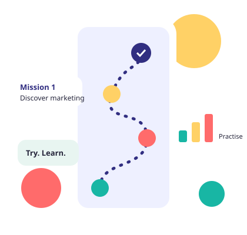

What is it?
Seekho Digital is a beginner-friendly place to learn digital marketing step by step.
Digital marketing for complete beginners. Simple words, clear pictures, practice you can do on your phone, and no pressure.

Seekho Digital is a beginner-friendly place to learn digital marketing step by step.
Complete beginners, including people learning on a phone and people who find English hard.
Ten modules: from marketing basics to SEO, social media, ads, email, analytics and freelancing.
Short lessons with examples, pictures and a fictional bakery case study.
Module checkpoints, a 50+ question practice zone, project briefs and a personal workbook.
Open Module 1. You can move freely: nothing is locked.
Many beginners feel lost because lessons use hard words and skip the basics. Here, no learner should feel stupid, lost or bored.
Five kinds of missions. Choose one to see what it means.
Open any module for guided lessons, checkpoints, a quiz, practical project and glossary.
A sample, so you can feel how practice works. It is not graded.
Honest status for each part of the platform.
53 original questions across the modules, with explanations, filters and retry.
Start practising →25 questions with answer frameworks and scenario prompts.
Practise answers →Ten practice briefs with deliverables and a clear portfolio workflow.
Explore projects →Short explainers and links to official platform learning resources.
Browse resources →Needs sign-in, moderation and a secure backend, so it is not live. We will not fake it.
Read why →Planned with a secure backend. It is not available yet.
See the plan →No. Module 1 starts from zero.
We cannot promise that. We help you build real skills and practice work you can honestly show.
Yes. The site is designed for small screens first.
No. You can open any lesson, although Module 1 is a good start.
Take it slowly. Come back as often as you like.